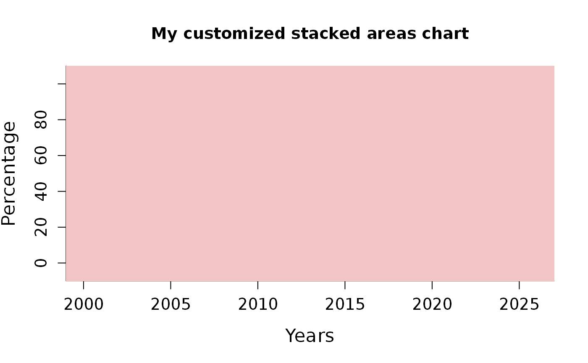

Draw a stacked areas chart.
stackedAreas( val, index = NULL, rgy = 1, cumul = FALSE, transp = FALSE, legend = NULL, add = FALSE, col = NULL, pickcolors = FALSE, lty = 1, lwd = 1, border = NA, main = "", xlab = "", ylab = "" )
| val | a dataframe or a matrix containing a series of positive values, rows stand for popultaions. |
|---|---|
| index | values to be used for the x axis, by default it is set to |
| rgy | a value that determines the range of y values. Default is set to 1 which means that the range of values is [0,1]. |
| cumul | a logical. If |
| transp | a logical. If |
| legend | Text to be used as a legend for each area drawn. |
| add | logical. Should stacked areas be added on the current plot? |
| col | vector of colors, repeated if too small. |
| pickcolors | logical. If |
| lty | the line type (see |
| lwd | the line width (see |
| border | The color to draw the border. The default, |
| main | a main title for the plot. |
| xlab | a label for the x axis, defaults to a description of |
| ylab | a label for the y axis, defaults to a description of |
Areas are drawn using the polygon function and users can take advantage of ot to customize their stacked areas (using lwd, lty or border arguments).
The default colors have been inspired by four palettes found on line: http:www.color-hex.com/color-palettes/. plotrix::stackpoly() function
from the plotrix package offers a good alternative.
Using a stacked areas chart with more than 20 areas should provide a figure really hard to read.
# data for 8 populations at 25 different periods. x <- data.frame(matrix(runif(200,2,10), 8, 25)) # plot 1: default plot stackedAreas(x)#> Error in ncol(x): object 'x' not found# plot 2: personalized plot graphics::par(xaxs='i', yaxs='i', font=2, cex.axis=1.2, cex.lab=1.4, bty='l') graphics::plot.default(c(1999,2027), c(-10,110), type='n', xlab='Years', ylab='Percentage', main='My customized stacked areas chart')stackedAreas(x, index=2001:2025, rgy=100, lwd=2, add=TRUE, border='transparent')#> Error in ncol(x): object 'x' not found